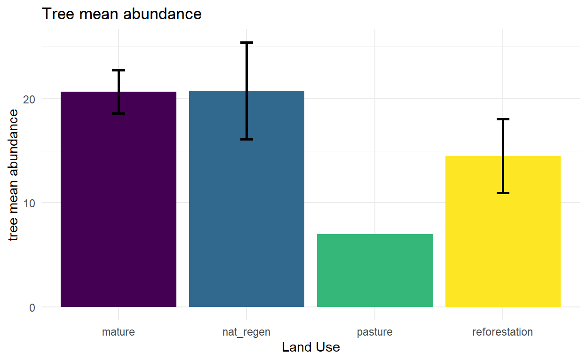
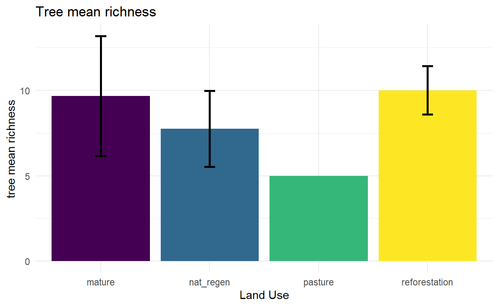
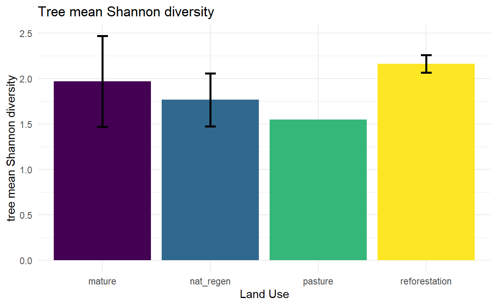
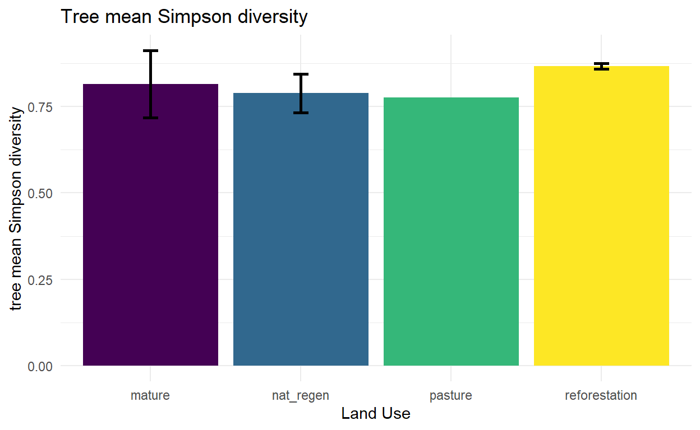
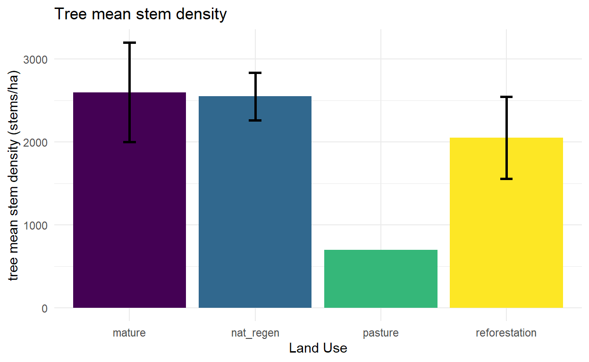
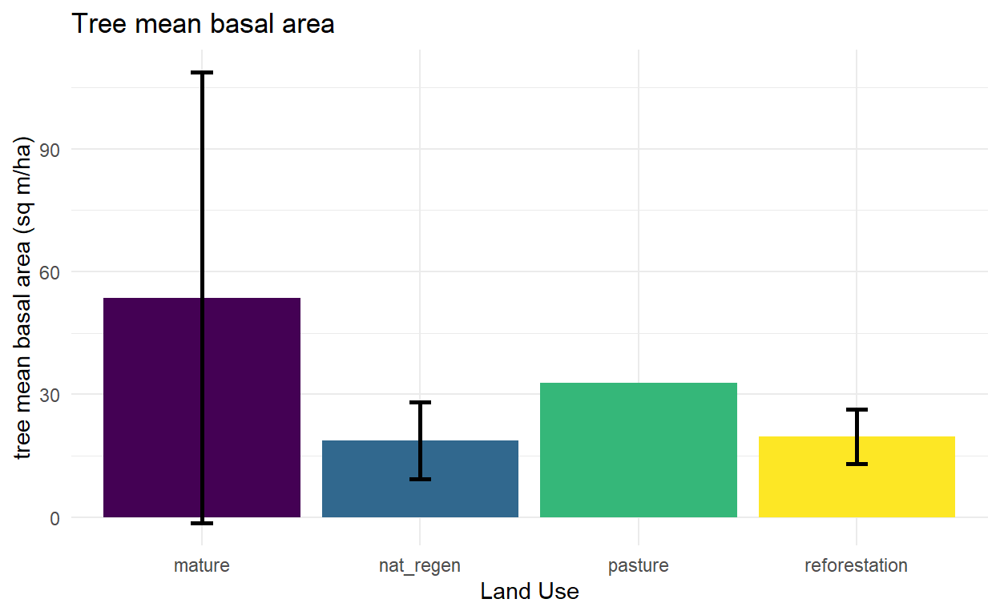
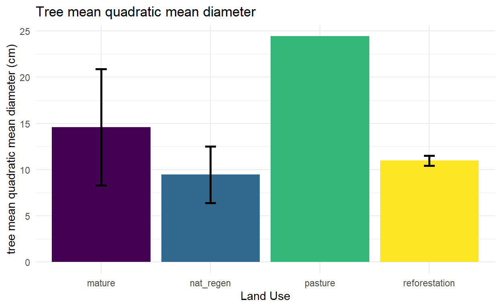
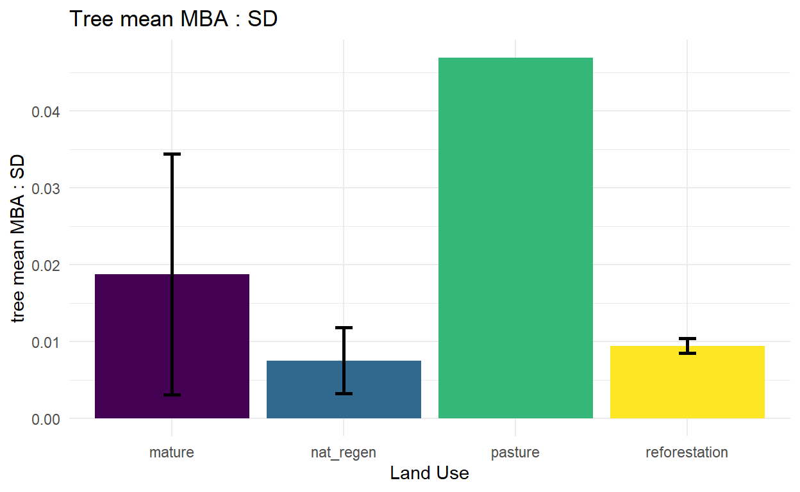

Gentry transects for tree richness
NOTE: I severely educed the sample dataset because I saw a suspicious amount of Github repo clones and don’t want the data everywhere. I will remake figures locally using a larger subset of data and upload them as files.
It’s hard to imagine conducting a monitoring campaign to assess the success of reforestation without considering the trees. Because the focus is richness and diversity, as opposed to basal area or carbon sequestration, I opted for the method developed by Alwyn Gentry: 50 meter long transects, 2 meters wide, where every woody stem of 2.5cm DBH and greater is measured and identified. Each of my sampling points has data from a Gentry transect that starts at the monument pin.
Three CSV files are needed for the initial data cleanup and analysis:
Setting up the environment and initial cleanup:
#Load libraries
library(ggplot2)
library(vegan)
library(viridis)
library(dplyr)
library(tidyr)
#Load the datasets
metadata <- read.csv("media/data/ETH dry season deployments AZ001-053.csv")
data <- read.csv("media/data/ETH tree data AZ001-053.csv")
gentry_metadata <- read.csv("media/data/ETH tree metadata AZ001-053.csv")
#data cleanup
#remove rows/columns not in analysis [for sample dataset thid does nothing, but I have it baked into the cleanup documentation]
metadata <- metadata[c(1:53),] ### which points are we analyzing?
gentry_metadata <- gentry_metadata[c(1:53),] ### which points are we analyzing?
data <- data[c(1:11)] ### extra blank columns
data<-data[which(complete.cases(data$meter)),] ### extra blank rows
data <- data[c(1:1752),] ### which points are we analyzing
#remove blank rows (if the number of rows changes in data, then there are blanks, look into why)
#[again, nothing happens in sample data set, but a good validation step]
data[data == ""] <- NA #replace blank with NA
data <- data[complete.cases(data$name), ]
#I need to include a step in cleanup to filter out lianas, which are currently included with trees if they have woody stems.
#this starts with compiling a species list of lianas and matching it against my tree species listI want to get several values from this analysis for each sampling point, namely tree abundance, species richness, and diversity indices (Shannon, Simpson, etc.). Acknowledging that these long and skinny plots are not the best method of measuring these structural indicators, I will also pull out data on stem density, basal area, and quadratic mean diameter. A mix of compositional and structural indicators is required for biodiversity crediting systems like Verra’s SD VISta methodology.
#removing extra stems (so one per individual)
data2 <- subset(data, stem == "1",)
# Simplify dataframe
data2 <- data2[c(1, 10)] # columns: point, name
# Count unique tree observations
data_counted <- data2 %>%
count(point, name)
# Summarize total tree abundance per point
total_tree_abundance <- data_counted %>%
group_by(point) %>%
summarise(total_abundance = sum(n)) %>%
arrange(point)The vegan package in R makes it easy to calculate all of these at once:
#calculating frequency
data3 <- data2 %>%
group_by(point, name) %>%
summarise(freq = n(), .groups = "drop")
#make point data wide for vegan package
data_wide <- data3 %>% spread(key=name, value=freq)
#replace NA values with 0:
data_wide[is.na(data_wide)] <- 0
#making dataframe of just counts:
data_counts <- data_wide[,-c(1)]
tree_abundance <- rowSums(data_counts) #total abundance - a bit of redundancy built in as I already calculated this. Good to see the values match up
tree_richness <- specnumber(data_counts) #species richness
tree_shannon<-diversity(data_counts) #Shannon diversity index
tree_simpson<- diversity(data_counts, "simpson") #Simpson diversity indexdata$area <- (pi*((data$dbh)/2)**2)/10000 #calculate area from diameter, then convert from sq cm to sq meters
#mean basal area per transect
mean_basal_area <- data %>%
group_by(point) %>%
summarise(mean_basal_area = sum(area, na.rm = TRUE)) %>%
arrange(point)
#mean basal area per hectare
mean_basal_area$mean_basal_area <- mean_basal_area$mean_basal_area*100 #treating the 2x50m Gentry transects as 100sqm plotsAt one point we discussed this as a structural indicator that would change predicatbly after reforestation. Stem density alone is likely to initially increase as shrubby and early successional species take over ex-pastureland, then decrease as the forest ages.
MBA_SD <- mean_basal_area$mean_basal_area/stem_density$stem_density#####
#remove rows for which we have no data - need the chase up why
tree_data <- metadata[-c(28, 29, 33),]
#remove columns we don't care about right now
tree_data <- tree_data[c(1,7)] #point, land use
# adding the various calculated indicators
tree_data$stem_density <- stem_density$stem_density
tree_data$mean_basal_area <- mean_basal_area$mean_basal_area
tree_data$MBA_SD <- MBA_SD
tree_data$quadratic_mean_diameter <- quadratic_mean_diameter$quadratic_mean_diameter
tree_data$tree_abundance <- tree_abundance
tree_data$tree_richness <- tree_richness
tree_data$tree_shannon <- tree_shannon
tree_data$tree_simpson <- tree_simpson
##### patterns by land use
selected_land_uses <- c("pasture",
"nat_regen",
"mature",
"reforestation",
"teak"
)
# Filter dataset and calculate means per land use
tree_summary <- tree_data %>%
filter(land_use %in% selected_land_uses) %>%
group_by(land_use) %>%
summarise(
tree_mean_stem_density = mean(stem_density, na.rm = TRUE),
tree_mean_basal_area = mean(mean_basal_area, na.rm = TRUE),
tree_mean_MBA_SD = mean(MBA_SD, na.rm = TRUE),
tree_mean_quadratic_mean_diameter = mean(quadratic_mean_diameter, na.rm = TRUE),
tree_mean_abundance = mean(tree_abundance, na.rm = TRUE),
tree_mean_richness = mean(tree_richness, na.rm = TRUE),
tree_mean_shannon = mean(tree_shannon, na.rm = TRUE),
tree_mean_simpson = mean(tree_simpson, na.rm = TRUE)
)
############# calculating standard deviation for error bars
tree_summary <- tree_data %>%
filter(land_use %in% selected_land_uses) %>%
group_by(land_use) %>%
summarise(
mean_stem_density = mean(stem_density, na.rm = TRUE),
sd_stem_density = sd(stem_density, na.rm = TRUE),
mean_mean_basal_area = mean(mean_basal_area, na.rm = TRUE),
sd_basal_area = sd(mean_basal_area, na.rm = TRUE),
mean_MBA_SD = mean(MBA_SD, na.rm = TRUE),
sd_MBA_SD = sd(MBA_SD, na.rm = TRUE),
mean_quadratic_mean_diameter = mean(quadratic_mean_diameter, na.rm = TRUE),
sd_quadratic_mean_diameter = sd(quadratic_mean_diameter, na.rm = TRUE),
mean_abundance = mean(tree_abundance, na.rm = TRUE),
sd_abundance = sd(tree_abundance, na.rm = TRUE),
mean_richness = mean(tree_richness, na.rm = TRUE),
sd_richness = sd(tree_richness, na.rm = TRUE),
mean_shannon = mean(tree_shannon, na.rm = TRUE),
sd_shannon = sd(tree_shannon, na.rm = TRUE),
mean_simpson = mean(tree_simpson, na.rm = TRUE),
sd_simpson = sd(tree_simpson, na.rm = TRUE)
)Now some simple plots to look at the relationship between these various composition and structural indicators and land use.







